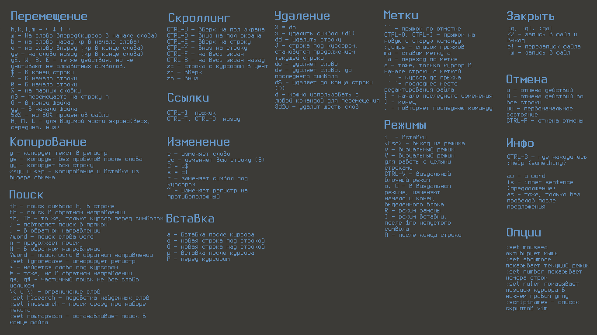

Vim
Заметка про VIM

Форматирование:
Для не отформатированных файлов
:!js-beautify % -o %Использование prettier
nnoremap <C-f> :silent exec "!npx prettier % --write --trailing-comma=all --single-quote=true --print-width=100"<cr> :redraw!<cr>Буферы
Fuzzy поиск по именам файлов (в открытых буферах).
:b fuzzyНастраиваем горячу клавишу, например
nnoremap <Leader>f :set nomore<Bar>:ls<Bar>:set more<CR>:b<Space>Git
Git Blame для выделенной, в VISUAL MODE, части текста
vnoremap <Leader>b :<C-U>!git blame <C-R>=expand("%:p") <CR> \| sed -n <C-R>=line("'<") <CR>,<C-R>=line("'>") <CR>p <CR>Опции VIM
При открытии файла установить курсор в последней позиции
au BufReadPost * if line("'\"") > 0|if line("'\"") <= line("$")|exe("norm '\"")|else|exe "norm $"|endif|endifАвтоматически удалять висячие пробелы при сохранении
autocmd BufWritePre *.{bemhtml,bemtree,js,c,css} :%s/\s\+$//eЦентровать результат поиска всегда по центру
nnoremap n nzz
nnoremap N Nzz
nnoremap * *zz
nnoremap # #zz
nnoremap g* g*zz
nnoremap g# g#zzЗагрузить предыдущую сессию
set viminfo='10,\"100,:20,%,n~/.viminfoПоставить курсор на предыдущую позицию открывая файл
au BufReadPost * if line("'\"") > 0|if line("'\"") <= line("$")|exe("norm '\"")|else|exe "norm $"|endif|endifИзменять директорию до места где находится редактируемый файл
autocmd BufEnter * lcd %:p:hПоиск
Найти слово над которым курсор
*Поиск по файлам
:grep PATERN [PATH] | :copenОткрыть список с результатами поиска по файлам
:copen
:cwТекст
Записать выделенный текст в файл
:'<,'>w text.txtПерейти к последнему выделенному фрагменту текста
gvВыравнивание текста
:center [width]
:right [width]
:leftТаблица с символами
:help digraph-tableВ режиме редактирования через CTRL+k
« <<
» >>
— M-
© Co
® Rg
± +-
λ l*
π p*
δ d*Функции
В режиме редактирования активируем калькулятор CTRL+r+= вводим выражение, жмём Enter
CTRL+r+=512/2 Enter
256Сортировка по длине строк
:'<,'> ! awk '{ print length(), $0 | "sort -n | cut -d\\ -f2-" }'Синтаксис
Открыть файл без расширения с нужным синтаксисом. Добавить в конец файла комментарий
# vim: syntax=config